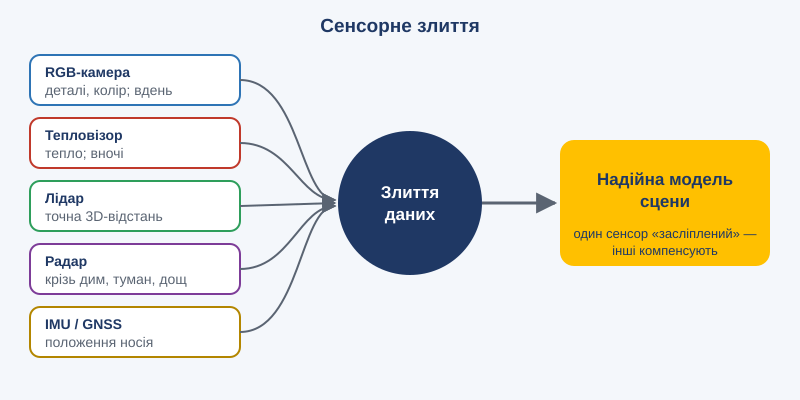

Тема 6. Комп'ютерний зір і машинне сприйняття

План заняття: цілі, навчальні питання, розподіл часу
Вид заняття: лекція з практикумом.
Час: 2 години (90 хв).
Місце: навчальний клас або комп'ютерний клас.
Навчальні цілі:
- Ознайомити з основними задачами та принципами комп'ютерного зору.
- Сформувати розуміння ролі сенсорного злиття та візуальної навігації.
- Навчити оцінювати умови, за яких системи зору стають ненадійними.
Навчальні питання:
- Задачі та методи комп'ютерного зору.
- Сенсорне злиття та візуальна навігація.
- Застосування, обмеження та вразливості.
Матеріальне забезпечення: проектор, несекретні відеозаписи польотів БПЛА в різних умовах (день, ніч, туман, тепловізор), за можливості демонстрація детектора об'єктів у реальному часі.
Розподіл часу:
| Етап | Зміст | Час |
|---|---|---|
| Вступна частина | Тема, цілі. «Як комп'ютер бачить зображення?» (пікселі як числа) | 10 хв |
| Навчальне питання 1 | Класифікація, детекція, сегментація, трекінг. Демонстрація | 25 хв |
| Навчальне питання 2 | Сенсори, злиття даних, навігація без GNSS | 20 хв |
| Навчальне питання 3 | Практикум: аналіз відео та вибір сенсорів | 25 хв |
| Заключна частина | Підсумки | 10 хв |
Методичні вказівки викладачу: демонструючи детектор, обов'язково покажіть його помилки: хибні спрацювання, пропуски вночі, у тумані, при камуфляжі. Курсанти мають вийти із заняття з чітким розумінням, що рамка навколо об'єкта на екрані — це гіпотеза, а не факт.
Навчальний матеріал
6.1. Що таке комп'ютерний зір
Комп'ютерний зір — це галузь ШІ, яка навчає машини «бачити»: отримувати змістовну інформацію із зображень і відео.
Для комп'ютера зображення — це таблиця чисел (яскравість і колір кожного пікселя). Завдання полягає в тому, щоб перетворити мільйони чисел на розуміння: «на знімку бронетехніка, 300 м, рухається на північ».
6.2. Основні задачі
| Задача | Питання | Приклад |
|---|---|---|
| Класифікація | Що на зображенні? | «Це вантажівка» |
| Детекція | Що і де? | Рамки навколо всіх транспортних засобів |
| Сегментація | Які саме пікселі належать об'єкту? | Точний контур будівлі |
| Трекінг | Куди рухається об'єкт? | Супровід цілі між кадрами |
| Оцінка пози | Як розташовані частини тіла? | Аналіз рухів спортсмена |
| Реконструкція 3D | Яка форма сцени? | 3D-модель місцевості за фото з дрона |
| Розпізнавання тексту (OCR) | Що написано? | Зчитування номерних знаків, документів |
6.3. Як це працює
Згорткові нейронні мережі (CNN) довго були основою комп'ютерного зору. Невеликі «фільтри» ковзають по зображенню й шукають ознаки: спершу краї, потім текстури, потім частини об'єктів.
Візуальні трансформери (ViT) ділять зображення на фрагменти й застосовують механізм уваги, як до слів у реченні.
Детектори реального часу (наприклад, сімейство YOLO, «You Only Look Once») обробляють десятки кадрів на секунду навіть на компактних бортових обчислювачах.
Моделі «відкритого словника» знаходять об'єкти за текстовим описом («знайди всі білі пікапи»), без спеціального навчання на кожен клас.
6.4. Сенсорне злиття (sensor fusion)

Одна камера бачить обмежено. Надійне сприйняття поєднує кілька джерел:
- RGB-камера: деталі й кольори, але погано працює вночі й у тумані;
- тепловізор: бачить теплові сигнатури, працює вночі;
- лідар: точна 3D-відстань;
- радар: працює крізь дим, туман і дощ;
- IMU та GNSS: положення й орієнтація самого носія;
- акустичні датчики: виявлення за звуком.
Злиття даних підвищує точність і стійкість: якщо один сенсор «засліплений», інші компенсують.
6.5. Візуальна навігація
Коли супутникова навігація недоступна (глушіння, спуфінг), системи орієнтуються за зображенням:
- візуальна одометрія оцінює рух за зміщенням деталей між кадрами;
- SLAM (одночасна локалізація й картографування) будує карту й водночас визначає своє місце на ній;
- зіставлення з картою порівнює зображення з камери із супутниковими знімками чи ортофотопланами.
6.6. Застосування
- медицина: аналіз рентгенівських знімків, КТ, МРТ, гістології;
- промисловість: контроль якості на конвеєрі;
- сільське господарство: моніторинг посівів, виявлення хвороб рослин;
- транспорт: автономне водіння, аналіз трафіку;
- безпека й оборона: розвідка, виявлення та класифікація об'єктів, оцінка уражень;
- гуманітарне розмінування: виявлення вибухонебезпечних предметів на знімках із дронів;
- рятувальні операції: пошук людей за тепловізійними знімками.
6.7. Обмеження та вразливості
- Погані умови: ніч, туман, дим, засвітка, рух камери.
- Маскування й камуфляж вводять модель в оману.
- Змагальні патерни: спеціальні візерунки можуть «приховати» об'єкт від детектора.
- Нові об'єкти: модель не розпізнає те, чого не було в навчальних даних.
- Хибні спрацювання: у критичних застосуваннях вартість помилки висока, тому потрібна верифікація людиною.
Висновки
- Комп'ютерний зір перетворює пікселі на розуміння сцени.
- Сенсорне злиття робить сприйняття надійнішим.
- Візуальна навігація стає критичною в умовах протидії супутниковим системам.
Запитання для роздумів
- Які комбінації сенсорів ви обрали б для пошуку людей уночі в лісі?
- Як перевірити, що детектор об'єктів надійно працює саме у ваших умовах?
Практичне завдання
«Вибір сенсорів» (у парах, 25 хв).
Для кожного сценарію оберіть комбінацію сенсорів і обґрунтуйте вибір:
- Пошук людей у лісі вночі для евакуації.
- Огляд поля на наявність вибухонебезпечних предметів удень.
- Політ у міській забудові в умовах глушіння GNSS.
- Спостереження за дорогою в тумані та дощ.
Для кожного сценарію також вкажіть, які помилки системи найімовірніші і як оператор має їх перевіряти.
Критерії оцінювання (2 бали): обґрунтованість вибору сенсорів (1 бал), аналіз можливих помилок (1 бал).
Тест для самоконтролю
Обери відповідь у кожному запитанні й натисни «Перевірити відповіді».